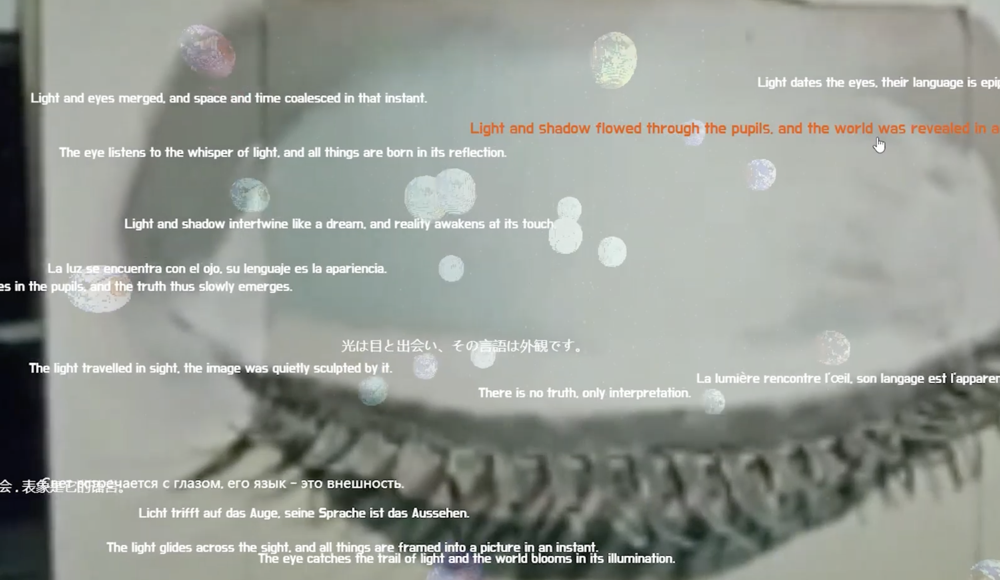
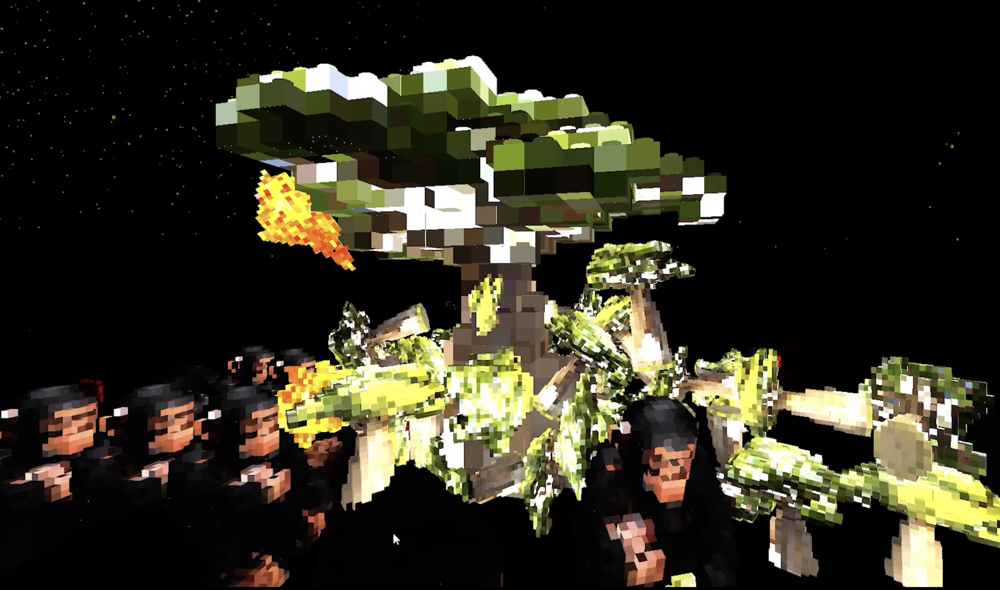
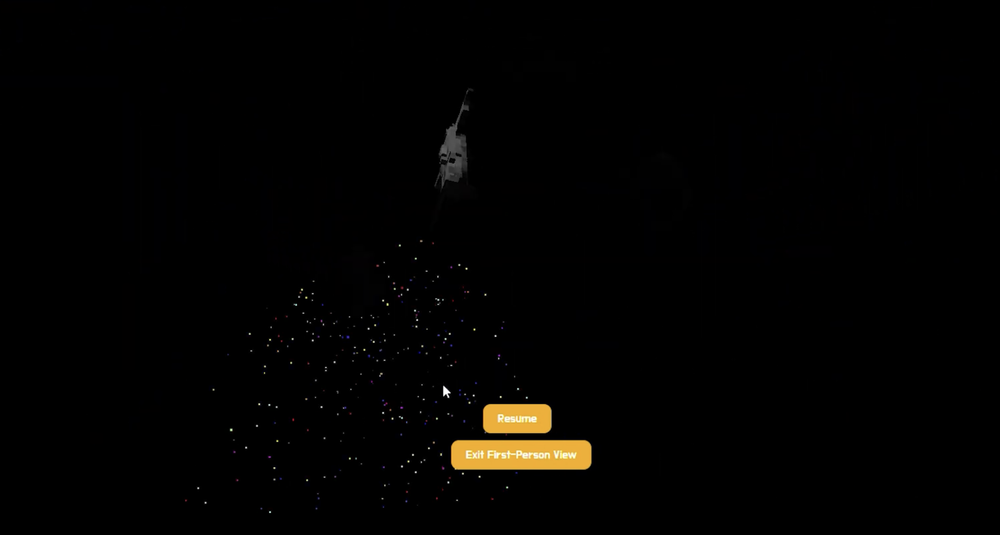
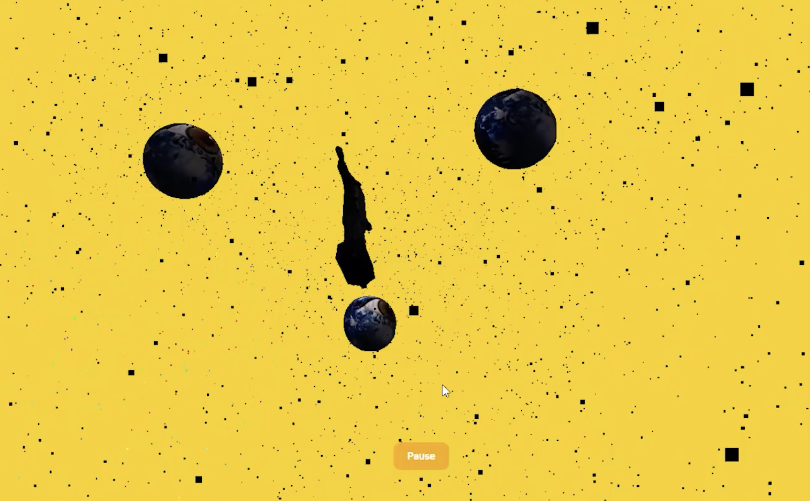
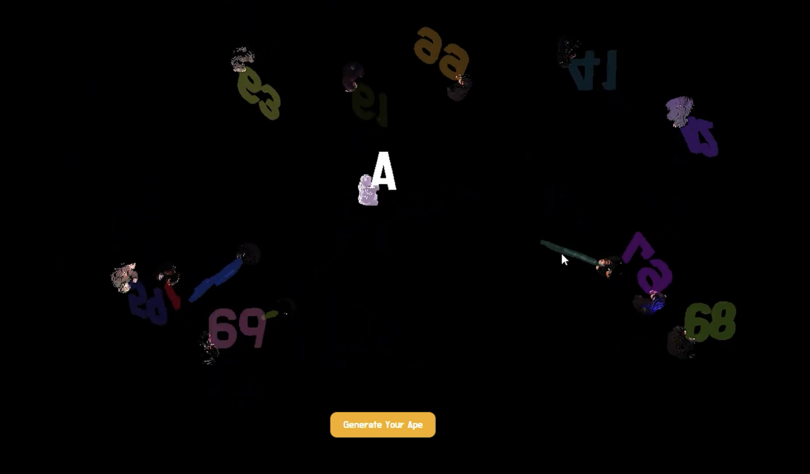
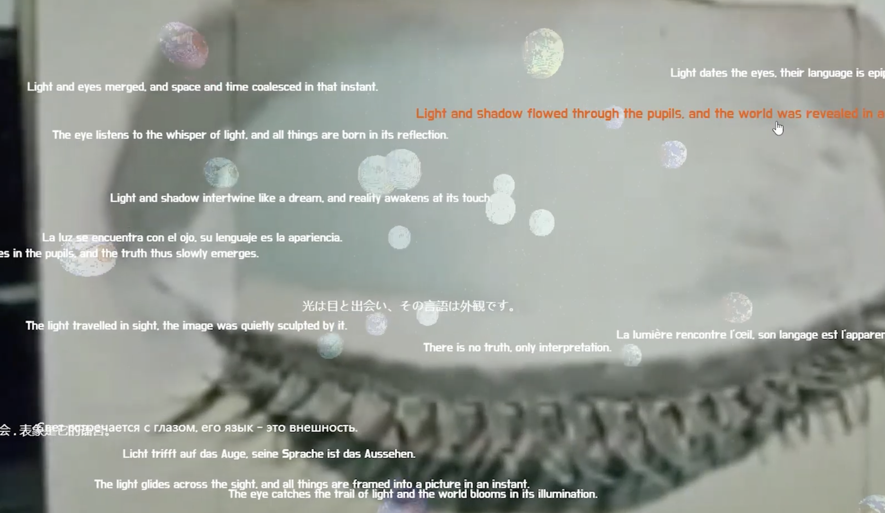
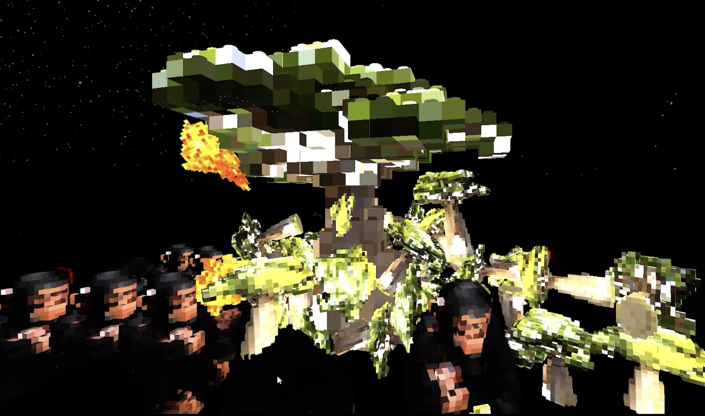
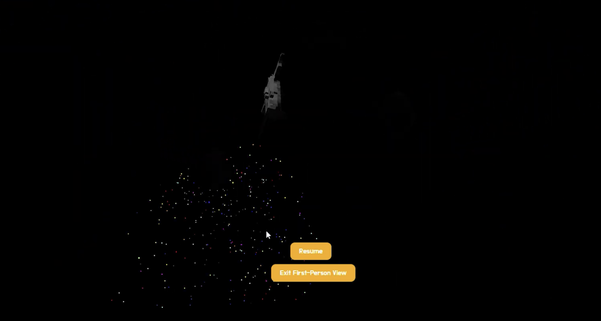
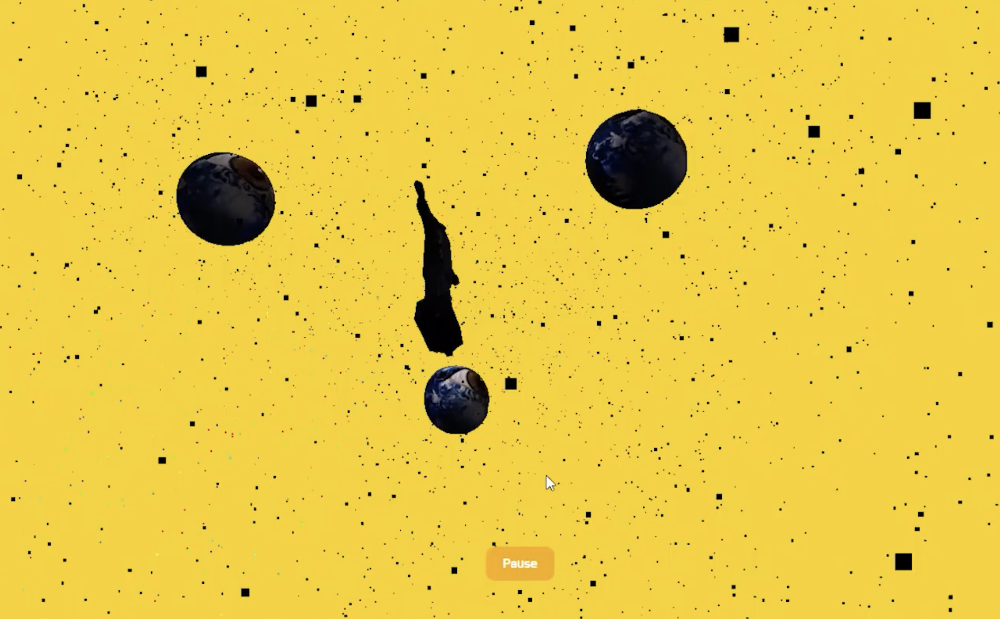
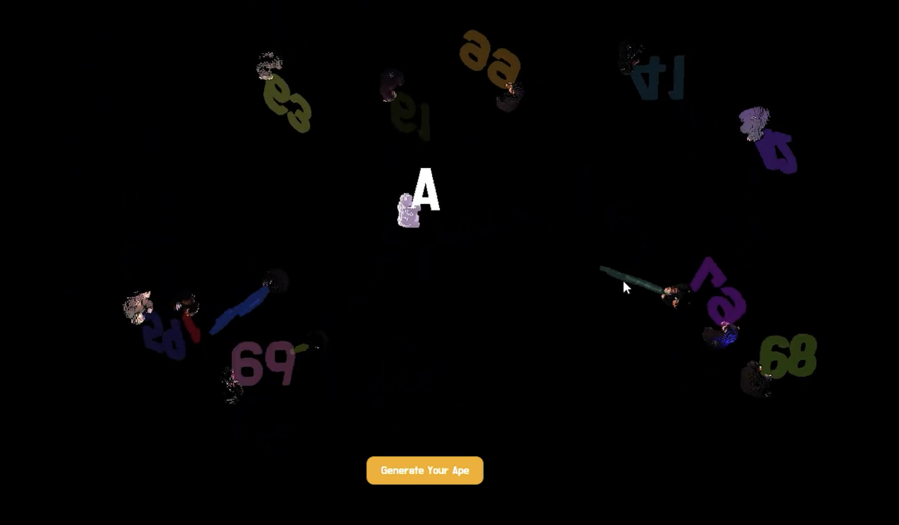

ABOUT
Art History Series
Reality、Truth and Perspectivism
Impressionist
Producer: Yi Huang
Content: This is a website work on art history and abstract virtualisation, accompanied by thesis images, exploring the relationship between humans and light, starting from the impact of photography on painting to the artworks of modernism that began to throw up questions.
the project brings together reflections on how to deal with the question of what is real, from the inspiration of pointillism on digital photography to the open-ended end of perspectivism.
Format: Website Art
Tech: HTML、Javascript
艺术史系列
真实、真相和视角主义
印象派
制作人：黄熠
内容：这是一个关于艺术史与抽象虚拟化的网站项目，通过论文配图探索人类与光的关系。从摄影对绘画的影响出发，到现代主义艺术作品开始提出质疑，该项目汇集了对“何为真实”这一命题的思考——从点彩派对数码摄影的启发，到透视主义开放式的终结。
形式：网络艺术
技术：HTML、Javascript

 









自检：
Self Reflection:
© 2024 All Rights Reserved.
《Ashes Of Sunrise》